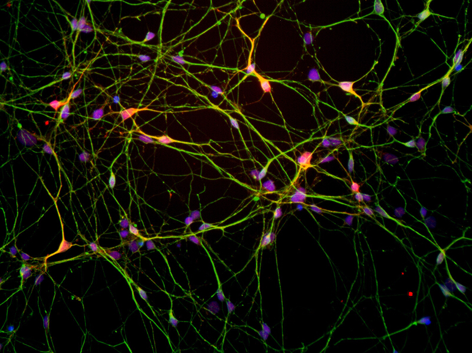

Guest Speakers
Current speaker list for Fall 2020:
Dr. Jeff Bronstein
-
Dr. Bronstein received his bachelor's degree from the University of California, Berkeley and M.D. and Ph.D. from UCLA as a recipient of the Medical Scientist Training Program Award. He completed a residency in Neurology and fellowship training in Movement Disorders at UCLA. Dr. Bronstein also completed a postdoctoral fellowship in molecular biology before being appointed an Assistant Professor of Neurology. He was later appointed Director of the Movement Disorders Program at UCLA. His interests and expertise include the management of Parkinson's disease (PD) and other movement disorders, surgical treatment of PD, and developing new therapies for patients. Dr. Bronstein was recently awarded one of 6 National Parkinson's Disease Centers at the Veterans Administration Medical Center with the goal of furthering research, education and clinical care in the Southwest US. His laboratory studies the cause of PD using cell models and a newly developed zebrafish model. His work is supported by the NIH and private foundations. Dr. Bronstein also directs clinical trials in order to develop new therapies for PD that include transplantation and deep brain stimulation.

Dr. Laurice Yang
-
Dr. Laurice Yang is a board-certified neurologist, specializing in the diagnosis of movement disorders including Parkinson’s disease, atypical parkinsonian disorders, Essential Tremor, and Huntington’s disease. Dr. Yang has a particular interest in dystonia and spasticity and has been trained to perform botulinum toxin injection under ultrasound guidance to better ensure accuracy and efficacy with each procedure. She is also the Assistant Clinic Chief for the department of Neurology, and she is the Co-Director for an MS 2 course that focuses on teaching the physical exam skills for cardiology, pulmonology, endocrine and neurology. She will be presenting how surgical interventions like deep brain stimulation can help patients with Parkinson's disease and dystonia.
Journal Clubs
-
In addition to presentations by our guest speakers, HAND will be facilitating journal clubs as part of the curriculum. The ability to read and understand scientific research is a crucial skill to possess in any STEM career. In groups, members will have the chance to practice breaking down research papers by sections, understanding the data and graphs, and summarizing key points. Papers will be related to topics of neuroscience and human behavior, with possible follow-up Q&A sessions with the authors.


Community Outreach
-
Even with a remote session, community service will still be a key component of HAND. Members will have the opportunity to participate in a variety of virtual volunteering events, such as teaching K-12th grade science panels, creating educational newsletters, and publishing blogs to our website focusing on topics such as recent research breakthroughs, upcoming innovations, and the importance of bioethics.